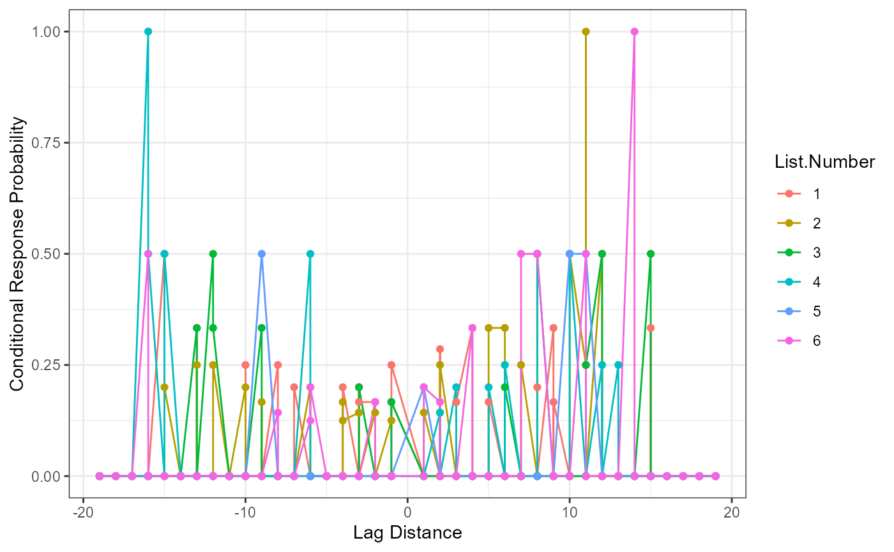

Multi_Recall.RmdPlease see manuscript for a long description of the following data. We will load the example data, and you can use the ? with the dataset name to learn more about the data. This example focuses on expanding the free recall options to include multiple or randomized lists by participant. You will need the data with a “list” or trial ID, as well as a matching answer key with the same ID.
library(lrd)
#>
#> Attaching package: 'lrd'
#> The following object is masked from 'package:base':
#>
#> kappa
data("multi_data")
head(multi_data)
#> Sub.ID List.Type
#> 1 1 Cat_Recall_L1
#> 2 1 AdHoc_Recall_L2
#> 3 1 Unrel_Recall_L3
#> 4 2 Unrel_Recall_L4
#> 5 2 Cat_Recall_L5
#> 6 2 AdHoc_Recall_L6
#> Response
#> 1 rosemary onionsalt chilli powder ginger gloves bayleaves curry
#> 2 yo-yo top sphere orb spiral satellite bicycle gear hurricane
#> 3 bishop desert whale index canteen lantern
#> 4 canoe dentist vapor solar saloon baby farm nugget valve
#> 5 cheese cloth jersey denim tweed burlap sheepskin lace
#> 6 door chair desk table clogs cabinet ship ruler shelf pencil stairs
#> List.Number
#> 1 1
#> 2 2
#> 3 3
#> 4 4
#> 5 5
#> 6 6
#?multi_data
data("multi_answers")
head(multi_answers)
#> List1 List2 List3 List4 List5 List6
#> 1 NUTMEG WINDMILL MANUAL SOLAR CHIFFON DOOR
#> 2 VANILLA DREIDEL DESERT CANOE DENIUM GAZEBO
#> 3 THYME SATELLITE HELMET BLOSSOM CHEESE CLOTH RULER
#> 4 CUMIN SPIRAL CANDY DENTIST BURLAP ROCKING HORSE
#> 5 ONION SALT TORNADO INDEX MATH WORSTED HOUSE
#> 6 CHIVES PINWHEEL ORPHAN ACORN ANGORA BARN
#?multi_answers
library(ggplot2)
library(reshape)The participant data should be in long format with each answer as one row of data. The participant ID will be repeated by participant, while the trial ID will be repeated by trial. You should use the repeated argument to indicate the information that denotes how the trials are repeated across participants. Note that in our example List.Type and List.Number contain the same information.
DF_long <- arrange_data(data = multi_data,
responses = "Response",
sep = " ",
id = "Sub.ID",
repeated = "List.Number")
head(DF_long)
#> response position Sub.ID List.Number
#> 1 rosemary 1 1 1
#> 2 onionsalt 2 1 1
#> 3 chilli 3 1 1
#> 4 powder 4 1 1
#> 5 ginger 5 1 1
#> 6 gloves 6 1 1Next, we will restructure the answer key to have one column for the answers and one column for the list ID. We will also relabel the columns (since reshape’s output is vague using variable and value). Last, we need to make sure the list ID column matches the column in our participant data.
multi_answers$position <- 1:nrow(multi_answers) #this column is only to reshape
answer_long <- melt(multi_answers,
measured = colnames(multi_answers),
id = "position")
#fix columns
colnames(answer_long) <- c("position", "List.ID", "Answer")
#match list id to participant data, which is only numbers
#list IDs can be characters or numbers
answer_long$List.ID <- gsub(pattern = "List",
replacement = "",
x = answer_long$List.ID)
head(answer_long)
#> position List.ID Answer
#> 1 1 1 NUTMEG
#> 2 2 1 VANILLA
#> 3 3 1 THYME
#> 4 4 1 CUMIN
#> 5 5 1 ONION SALT
#> 6 6 1 CHIVESScoring in lrd is case sensitive, so we will use tolower() to lower case all correct answers and participant answers. In this particular example, all the spaces from the participant answers were removed, so we will also remove them from the answer key.
DF_long$response <- tolower(DF_long$response)
answer_long$Answer <- tolower(answer_long$Answer)
answer_long$Answer <- gsub(" ", "", answer_long$Answer)
head(DF_long)
#> response position Sub.ID List.Number
#> 1 rosemary 1 1 1
#> 2 onionsalt 2 1 1
#> 3 chilli 3 1 1
#> 4 powder 4 1 1
#> 5 ginger 5 1 1
#> 6 gloves 6 1 1
head(answer_long)
#> position List.ID Answer
#> 1 1 1 nutmeg
#> 2 2 1 vanilla
#> 3 3 1 thyme
#> 4 4 1 cumin
#> 5 5 1 onionsalt
#> 6 6 1 chivesYou should define the following:
free_output <- prop_correct_multiple(data = DF_long,
responses = "response",
key = answer_long$Answer,
key.trial = answer_long$List.ID,
id = "Sub.ID",
id.trial = "List.Number",
cutoff = 1,
flag = TRUE)
str(free_output)
#> List of 2
#> $ DF_Scored :'data.frame': 117 obs. of 6 variables:
#> ..$ Responses : chr [1:117] "basil" "basil" "bayleaves" "bayleaves" ...
#> ..$ position : chr [1:117] "8" "7" "7" "8" ...
#> ..$ Sub.ID : chr [1:117] "5" "3" "1" "3" ...
#> ..$ List.Number: chr [1:117] "1" "1" "1" "1" ...
#> ..$ Answer : chr [1:117] "basil" "basil" "bayleaves" "bayleaves" ...
#> ..$ Scored : num [1:117] 1 1 1 1 1 1 1 0 1 1 ...
#> $ DF_Participant:'data.frame': 14 obs. of 4 variables:
#> ..$ Sub.ID : chr [1:14] "1" "3" "5" "1" ...
#> ..$ Proportion.Correct : num [1:14] 0.3 0.45 0.45 0.45 0.45 0.55 0.3 0.35 0.35 0.35 ...
#> ..$ List.Number : chr [1:14] "1" "1" "1" "2" ...
#> ..$ Z.Score.Participant: num [1:14, 1] -1.155 0.577 0.577 -0.577 -0.577 ...
#> .. ..- attr(*, "dimnames")=List of 2
#> .. .. ..$ : NULL
#> .. .. ..$ : NULLWe can use DF_Scored to see the original dataframe with our new scored column - also to check if our answer key and participant answers matched up correctly! The DF_Participant can be used to view a participant level summary of the data. Last, if a grouping variable is used, we can use DF_Group to see that output.
#Overall
free_output$DF_Scored
#> Responses position Sub.ID List.Number Answer Scored
#> 1 basil 8 5 1 basil 1
#> 2 basil 7 3 1 basil 1
#> 3 bayleaves 7 1 1 bayleaves 1
#> 4 bayleaves 8 3 1 bayleaves 1
#> 5 bayleaves 3 5 1 bayleaves 1
#> 6 celeryseed 1 5 1 celeryseed 1
#> 7 chilipowder 6 3 1 chilipowder 1
#> 8 chilli 3 1 1 <NA> 0
#> 9 chyme 3 3 1 thyme 1
#> 10 cloves 9 3 1 cloves 1
#> 11 cumin 7 5 1 cumin 1
#> 12 curry 6 5 1 curry 1
#> 13 curry 8 1 1 curry 1
#> 14 ginger 5 1 1 ginger 1
#> 15 ginger 1 3 1 ginger 1
#> 16 gloves 6 1 1 cloves 1
#> 17 horseradish 4 5 1 horseradish 1
#> 18 nutmeg 2 3 1 nutmeg 1
#> 19 onionsalt 2 1 1 onionsalt 1
#> 20 onionsalt 2 5 1 onionsalt 1
#> 21 onionsalt 4 3 1 onionsalt 1
#> 22 oregano 9 5 1 oregano 1
#> 23 powder 4 1 1 <NA> 0
#> 24 rosemary 1 1 1 rosemary 1
#> 25 rosemary 5 3 1 rosemary 1
#> 26 sage 10 5 1 sage 1
#> 27 salt 5 5 1 <NA> 0
#> 28 bicycle 4 3 2 bicycle 1
#> 29 bicycle 7 1 2 bicycle 1
#> 30 bottle 1 3 2 bottle 1
#> 31 gear 8 1 2 gear 1
#> 32 hurricane 9 1 2 hurricane 1
#> 33 hurricane 9 5 2 hurricane 1
#> 34 orb 4 1 2 orb 1
#> 35 orb 5 5 2 orb 1
#> 36 pinwheel 1 5 2 pinwheel 1
#> 37 propeller 7 3 2 propeller 1
#> 38 propeller 2 5 2 propeller 1
#> 39 record 5 3 2 record 1
#> 40 record 7 5 2 record 1
#> 41 roulette 8 5 2 roulette 1
#> 42 satellite 6 1 2 satellite 1
#> 43 satellite 8 3 2 satellite 1
#> 44 sphere 3 5 2 sphere 1
#> 45 sphere 3 1 2 sphere 1
#> 46 spiral 3 3 2 spiral 1
#> 47 spiral 5 1 2 spiral 1
#> 48 spool 6 5 2 spool 1
#> 49 top 2 1 2 top 1
#> 50 top 4 5 2 top 1
#> 51 top 6 3 2 top 1
#> 52 tornado 10 5 2 tornado 1
#> 53 tornodo 9 3 2 tornado 1
#> 54 windmill 11 5 2 windmill 1
#> 55 yo-yo 1 1 2 yo-yo 1
#> 56 yo-yo 2 3 2 yo-yo 1
#> 57 anchor 6 3 3 <NA> 0
#> 58 bishop 1 1 3 bishop 1
#> 59 candy 8 3 3 candy 1
#> 60 canteen 4 3 3 canteen 1
#> 61 canteen 5 1 3 canteen 1
#> 62 desert 2 1 3 desert 1
#> 63 helmet 2 3 3 helmet 1
#> 64 hermet 1 3 3 helmet 1
#> 65 index 4 1 3 index 1
#> 66 lantern 6 1 3 lantern 1
#> 67 meteor 5 3 3 meteor 1
#> 68 wax 7 3 3 wax 1
#> 69 whale 3 1 3 whale 1
#> 70 whale 3 3 3 whale 1
#> 71 baby 6 2 4 <NA> 0
#> 72 cane 5 4 4 cane 1
#> 73 canoe 1 2 4 canoe 1
#> 74 canoe 6 4 4 canoe 1
#> 75 dentist 2 2 4 dentist 1
#> 76 farm 4 4 4 farm 1
#> 77 farm 7 2 4 farm 1
#> 78 funk 1 4 4 funk 1
#> 79 math 3 4 4 math 1
#> 80 nugget 8 2 4 nugget 1
#> 81 outlaw 2 4 4 outlaw 1
#> 82 pint 7 4 4 pint 1
#> 83 saloon 5 2 4 <NA> 0
#> 84 solar 4 2 4 solar 1
#> 85 valve 9 2 4 valve 1
#> 86 vapor 3 2 4 vapor 1
#> 87 bucket 7 4 5 <NA> 0
#> 88 burlap 6 2 5 burlap 1
#> 89 cheese 1 2 5 <NA> 0
#> 90 cloth 2 2 5 <NA> 0
#> 91 compost 1 4 5 <NA> 0
#> 92 denim 4 2 5 denium 1
#> 93 jersey 3 2 5 jersey 1
#> 94 lace 8 2 5 lace 1
#> 95 pick 6 4 5 <NA> 0
#> 96 plow 3 4 5 <NA> 0
#> 97 shears 5 4 5 <NA> 0
#> 98 sheepskin 7 2 5 sheepskin 1
#> 99 sieve 2 4 5 <NA> 0
#> 100 tweed 5 2 5 tweed 1
#> 101 wheelbarrow 4 4 5 <NA> 0
#> 102 baseballbat 1 4 6 baseballbat 1
#> 103 cabinet 6 2 6 cabinet 1
#> 104 chair 2 2 6 chair 1
#> 105 chair 2 4 6 chair 1
#> 106 clogs 5 2 6 clogs 1
#> 107 desk 3 2 6 desk 1
#> 108 desk 4 4 6 desk 1
#> 109 door 1 2 6 door 1
#> 110 pencil 5 4 6 pencil 1
#> 111 pencil 10 2 6 pencil 1
#> 112 ruler 8 2 6 ruler 1
#> 113 shelf 9 2 6 shelf 1
#> 114 ship 7 2 6 ship 1
#> 115 stairs 11 2 6 stairs 1
#> 116 table 4 2 6 table 1
#> 117 table 3 4 6 table 1
#Participant
free_output$DF_Participant
#> Sub.ID Proportion.Correct List.Number Z.Score.Participant
#> 1 1 0.30 1 -1.1547005
#> 2 3 0.45 1 0.5773503
#> 3 5 0.45 1 0.5773503
#> 4 1 0.45 2 -0.5773503
#> 5 3 0.45 2 -0.5773503
#> 6 5 0.55 2 1.1547005
#> 7 1 0.30 3 -0.7071068
#> 8 3 0.35 3 0.7071068
#> 9 2 0.35 4 NaN
#> 10 4 0.35 4 NaN
#> 11 2 0.30 5 0.7071068
#> 12 4 0.00 5 -0.7071068
#> 13 2 0.55 6 0.7071068
#> 14 4 0.25 6 -0.7071068
#Group
#free_output$DF_GroupThis function prepares the data for a serial position curve analysis or visualization. Please note, it assumes you are using the output from above, but any output with these columns would work fine. The arguments are roughly the same as the overall scoring function. We’ve also included some ggplot2 code as an example to help show how you might use our output for plotting. List.ID indicates the list identifier for examining differences in responses between lists.
serial_output <- serial_position_multiple(data = free_output$DF_Scored,
position = "position",
answer = "Answer",
key = answer_long$Answer,
key.trial = answer_long$List.ID,
scored = "Scored",
id.trial = "List.Number")
head(serial_output)
#> Tested.Position Freq Proportion.Correct SE List.ID
#> 1 1 0 0.0000000 0.0000000 1
#> 2 3 0 0.0000000 0.0000000 1
#> 3 4 0 0.0000000 0.0000000 1
#> 4 5 1 0.3333333 0.2721655 1
#> 5 7 1 0.3333333 0.2721655 1
#> 6 8 0 0.0000000 0.0000000 1
ggplot(serial_output, aes(Tested.Position, Proportion.Correct, color = List.ID)) +
geom_line() +
geom_point() +
xlab("Tested Position") +
ylab("Probability of First Response") +
theme_bw() Conditional response probability is the likelihood of answers given the current answer set. Therefore, the column participant_lags represents the lag between the written and tested position (e.g., chair was listed second, which represents a lag of -6 from spot number 8 on the answer key list). The column Freq represents the frequency of the lags between listed and shown position, while the Possible.Freq column indicates the number of times that frequency could occur given each answer listed (e.g., given the current answer, a tally of the possible lags that could still occur). The CRP column calculates the conditional response probability, or the frequency column divided by the possible frequencies of lags.
crp_output <- crp_multiple(data = free_output$DF_Scored,
key = answer_long$Answer,
position = "position",
scored = "Scored",
answer = "Answer",
id = "Sub.ID",
key.trial = answer_long$List.ID,
id.trial = "List.Number")
head(crp_output)
#> Sub.ID participant_lags Freq Possible.Freq List.Number CRP
#> 1 1 -19 0 0 1 0.0
#> 2 1 -18 0 0 1 0.0
#> 3 1 -17 0 0 1 0.0
#> 4 1 -16 0 0 1 0.0
#> 5 1 -15 1 2 1 0.5
#> 6 1 -14 0 0 1 0.0
crp_output$participant_lags <- as.numeric(as.character(crp_output$participant_lags))
ggplot(crp_output, aes(participant_lags, CRP, color = List.Number)) +
geom_line() +
geom_point() +
xlab("Lag Distance") +
ylab("Conditional Response Probability") +
theme_bw()
Participant answers are first filtered for their first response, and these are matched to the original order on the answer key list (Tested.Position). Then the frequency (Freq) of each of those answers is tallied and divided by the number of participants overall or by group if the group.by argument is included (pfr).
pfr_output <- pfr_multiple(data = free_output$DF_Scored,
key = answer_long$Answer,
position = "position",
scored = "Scored",
answer = "Answer",
id = "Sub.ID",
key.trial = answer_long$List.ID,
id.trial = "List.Number")
head(pfr_output)
#> Tested.Position Freq pfr List.ID
#> 1 12 1 0.3333333 1
#> 2 14 1 0.3333333 1
#> 3 20 1 0.3333333 1
#> 4 6 1 0.3333333 2
#> 5 13 1 0.3333333 2
#> 6 14 1 0.3333333 2
pfr_output$Tested.Position <- as.numeric(as.character(pfr_output$Tested.Position))
ggplot(pfr_output, aes(Tested.Position, pfr, color = List.ID)) +
geom_line() +
geom_point() +
xlab("Tested Position") +
ylab("Probability of First Response") +
theme_bw()